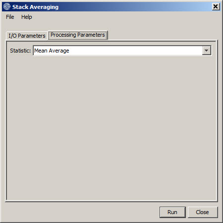

| Stack Averaging |
|
_ref/_sec (or
_mst/_slv) date suffix: for example all
Gamma0_VV_ref_<date> and Gamma0_VV_sec<k>_<date>
bands give one output band Gamma0_VV. The statistics are mean, minimum,
maximum, standard deviation and coefficient of variation. There is no median. Gamma0_VV a stable pixel at
4.4 looks gives about 0.48 (1/√4.4); on amplitude input the value is lower, so compare
CVs only between products of the same unit.
GPT operator: Stack-Averaging. Generated from the operator source; parameter names are those used in GPT and graph XML.
| Parameter | Type | Default | Allowed values | Unit | Description |
|---|---|---|---|---|---|
statistic | String | Mean Average | Mean Average, Minimum, Maximum, Standard Deviation, Coefficient of Variation | Statistic | |
minValidDates | int | 1 | [1,*) | Minimum number of valid (not no-data) dates a pixel needs; fewer gives no-data. Standard Deviation and Coefficient of Variation always need at least 2. |